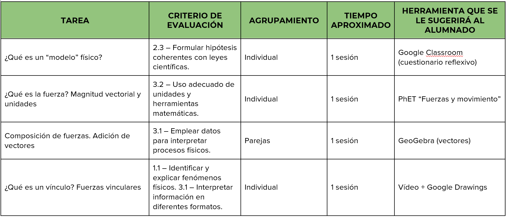
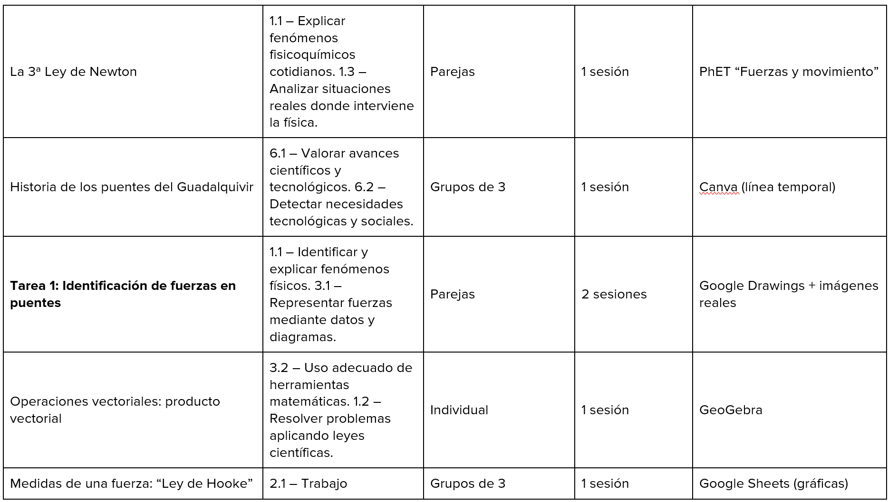

Texto
Guía didáctica del proyecto “¿Cómo cruzamos el Guadalquivir?”
1. Justificación del proyecto
Este proyecto propone al alumnado el diseño y construcción de un puente capaz de soportar una prueba de carga real. A través de esta tarea global, el alumnado aplica conceptos de fuerzas, equilibrio, estructuras y materiales, desarrollando competencias científicas, digitales y cooperativas. La propuesta se basa en metodologías activas y en el aprendizaje basado en proyectos (ABP), fomentando la investigación, la experimentación y la resolución de problemas reales.
2. Objetivos didácticos
Comprender las fuerzas que actúan sobre una estructura.
- Aplicar principios de equilibrio y estabilidad.
- Utilizar herramientas digitales para investigar y comunicar.
- Diseñar y construir una maqueta funcional.
- Trabajar de forma cooperativa y responsable.
- Comunicar resultados de forma clara y rigurosa.
3. Competencias clave
CCL – Comunicación lingüística
STEM – Competencia matemática, ciencia y tecnología
CD – Competencia digital
CPSAA – Competencia personal, social y aprender a aprender
CC – Competencia ciudadana
CE – Competencia emprendedora
CCEC – Conciencia y expresión cultural
4. Competencias específicas de Física y Química (3º ESO)
CE1: Comprender y aplicar conceptos físicos en situaciones reales.
CE2: Utilizar el método científico para analizar problemas.
CE3: Emplear herramientas digitales para investigar y comunicar.
CE4: Trabajar de forma cooperativa y responsable.
CE5: Comunicar información científica de forma clara y rigurosa.
5. Temporalización
Duración total: 15 sesiones
Sesión 1: Presentación del reto.
Sesión 2: Fuerzas y estructuras.
Sesión 3: Equilibrio y estabilidad.
Sesión 4: Simuladores digitales.
Sesión 5: Tipos de puentes y análisis estructural.
Sesión 6: Bocetos iniciales.
Sesión 7: Cálculos y mejoras del diseño.
Sesión 8: Planos definitivos y selección de materiales.
Sesión 9: Inicio de la construcción.
Sesión 10: Construcción (fase 2).
Sesión 11: Construcción (fase 3).
Sesión 12: Acabados y pruebas preliminares.
Sesión 13: Prueba de carga oficial.
Sesión 14: Preparación de la presentación final.
Sesión 15: Presentación final del proyecto.
6. Relación tareas con criterios de evaluación




Para ver el documento completo, pincha el enlace: https://docs.google.com/document/d/1ltC8Iys7RsrSqfX2YEnvEcQtFzGEwRWB/edit?usp=sharing&ouid=103316270693957964656&rtpof=true&sd=true
7. Metodología
Aprendizaje Basado en Proyectos (ABP)
Trabajo cooperativo con roles definidos
Aprendizaje por investigación
Uso de simuladores digitales
Evaluación formativa y continua
Aprendizaje significativo mediante retos reales
8. Organización del aula
Grupos cooperativos de 3–4 alumnos/as.
Roles: coordinación, diseño, cálculos, construcción, presentación.
Espacios: aula ordinaria + laboratorio o taller.
Materiales accesibles y organizados por estaciones.
9. Atención a la diversidad
Andamiaje visual y conceptual.
Materiales adaptados para alumnado NEAE.
Ritmos diferenciados mediante tareas escalonadas.
Uso de simuladores para alumnado con dificultades motrices.
Extensiones para alumnado de alto rendimiento (optimización estructural).
Evaluación flexible: oral, escrita, digital.
10. Recursos necesarios
Palillos de madera, cartón, cuerdas, pegamento.
Simuladores digitales (PhET, GeoGebra).
Dispositivos con acceso a internet.
Herramientas de diseño digital (Genially, Padlet, Wakelet).
Material audiovisual.
Balanza o pesas para prueba de carga.
11. Evaluación
Instrumentos utilizados
- Rúbrica del producto final.
- Lista de cotejo del trabajo cooperativo.
- Rúbrica de la presentación oral.
- Registro de la prueba de carga.
- Observación directa.
- Autoevaluación y coevaluación.
Evaluación formativa
- Retroalimentación continua en cada fase.
- Revisión de bocetos y cálculos.
- Ajustes durante la construcción.
Evaluación sumativa
- Producto final (maqueta + Genially).
- Prueba de carga.
- Presentación oral.
- Trabajo cooperativo.
12. Relación con los ODS
Este proyecto contribuye especialmente a:
ODS 4: Educación de calidad
ODS 9: Industria, innovación e infraestructura
ODS 11: Ciudades y comunidades sostenibles
ODS 12: Producción y consumo responsables
13. Seguridad y normas de uso de materiales
- Uso responsable de herramientas de corte.
- Prohibido aplicar fuerza excesiva sin supervisión.
- Mantener el espacio de trabajo ordenado.
- Uso adecuado de pegamentos y materiales.
- Respetar las normas del laboratorio.
14. Conexión con otras materias
- Tecnología: estructuras, materiales, diseño técnico.
- Matemáticas: proporciones, vectores, cálculos.
- Lengua: comunicación oral y escrita.
- Plástica: diseño visual y maquetación.
- Digital: creación de presentaciones interactivas.